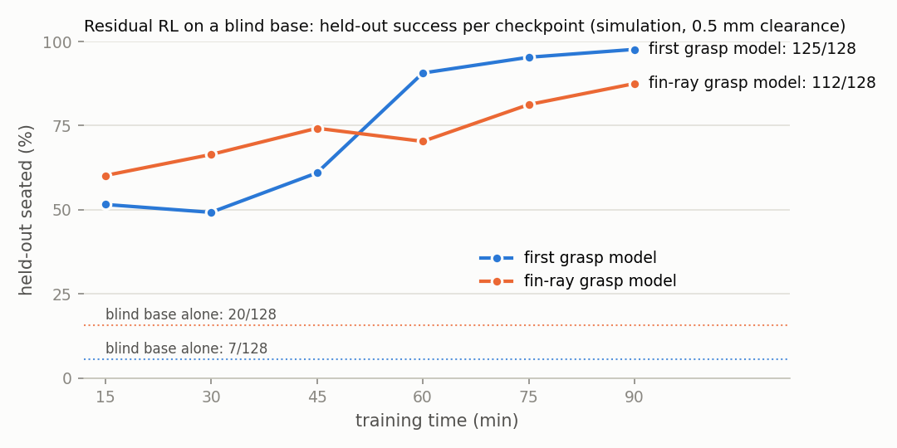
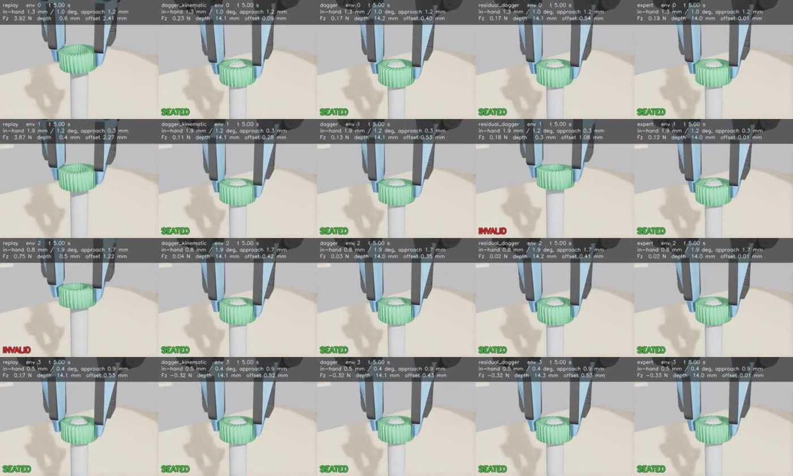
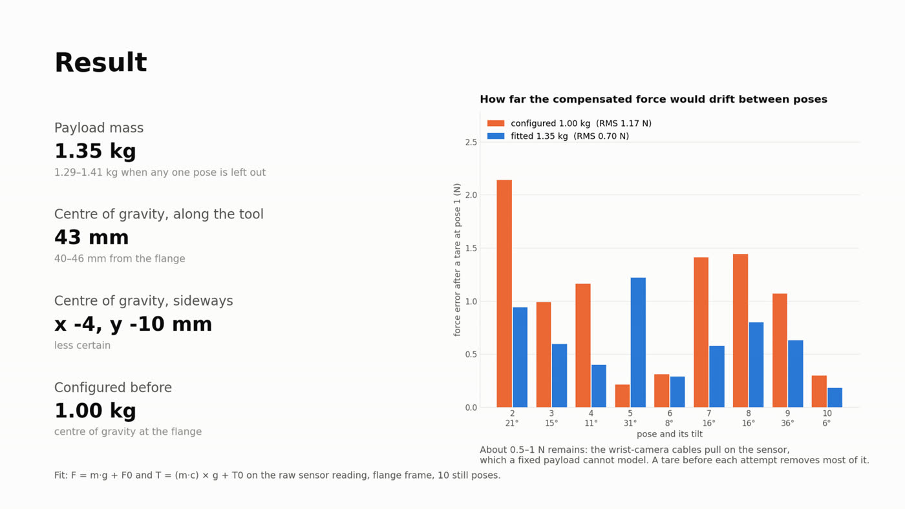

Contact-Aware Residual RL for Sim-to-Real Insertion
Force-aware residual reinforcement learning for nut-on-rod insertion on a physical UR5e
Northeastern University · 2026
Physical UR5eIsaac Lab contact simulation
- Question
- Does a force-aware residual improve physical insertion over the controllers it is built from?
- Setting
- Physical UR5e, Robotiq 2F-85 fin-ray gripper, printed nut onto a threaded rod (≈2.7 mm radial clearance)
- Measurement
- Insertion success: the nut seated on the rod at the end of the attempt
- Comparators
- Naïve expert replay · sim-to-real visuomotor policy, same task and protocol
Overview
Simulation-trained manipulation policies often fail during insertion: small grasping errors, contact forces and calibration inaccuracies are not captured by visual observations or demonstration replay.
I developed a force-aware policy adaptation framework that combines a pretrained base controller with bounded residual RL. The residual reads wrist force/torque feedback and robot state, and corrects the insertion motion while preserving what the base controller already does well. Payload, sensing and fixture measurements from the real robot are fed back into an Isaac Lab contact simulation, so the observation chain the policy trains on matches the one it runs on.
Method
DAgger distils a privileged contact expert into a base policy that runs on hardware observations. Residual PPO then learns corrections on top of that base while it stays frozen. The residual actor starts with a near-zero mean, so early training reproduces the base controller.
Action and safety bounds
The policy outputs five TCP velocities: lateral X/Y, vertical Z and tilt about X/Y. Training samples a Gaussian policy with a clipped PPO objective and GAE; deployment uses its deterministic mean.
action = clip(base_action + residual_scale × clip(residual))
Contact-aware reward
reward = seating bonus + alignment-gated progress − excessive wrench − hard failure − correction size − correction slew − time
- Geometric seating defines success, not contact force alone.
- Depth progress is gated by alignment, so the policy aligns before pushing deeper.
- Wrench cost is averaged over physics substeps to account for loads between policy updates.
- Residual size and slew carry a cost, favouring small, smooth corrections.
Evaluation
The physical evaluation runs the same nut-on-rod task with three controllers: the naïve expert replay, a visuomotor policy transferred from simulation, and the force-aware residual. The simulation benchmark is deliberately tighter than the physical nut (0.5 mm vs. ≈2.7 mm radial clearance), because loose fits hide the difference between policies: at 2.7 mm, blind replay already seats 122 of 128 simulated attempts.
Simulation benchmark Physics sim · 0.5 mm
| Alignment input | Policy | Seated / 128 |
|---|---|---|
| None | Blind force-limited replay | |
| Kinematic estimate | DAgger | |
| Oracle-derived, noisy | DAgger | |
| Oracle-derived, noisy | Residual PPO on DAgger |


Ablations that make the hardware result convincing
| Experiment | Question answered | Status |
|---|---|---|
| Base controllers vs. residual RL | Does residual adaptation improve physical insertion success? | Reported above |
| With vs. without force history | Is contact feedback necessary for the improvement? | Next |
| Offset and orientation sweeps | Does the policy tolerate grasp and calibration errors? | Next |
| Success, peak force and duration | Are successful insertions also safe and efficient? | Next |
| Simulated vs. physical | Where does the sim-to-real gap remain? | Next |
Calibration and Deployment
Generated approach demonstrations from my Real2Render pipeline are replayed in an Isaac Lab contact environment built on Factory/IndustReal. Fitted payload, centre of gravity, wrist-sensor noise and fixture registration are written back into the simulator. The exported policy runs in NumPy on the robot computer with the same observation processing and action integration as training.

Contributions
Built on
- Isaac Lab, Factory / IndustRealcontact simulation and assembly environments
- DAgger and PPOstandard imitation and policy-gradient algorithms
- Real2Render2Realgenerated approach demonstrations for the UR5e
Adapted
- Contact environmentfin-ray grasp compliance, measured payload, sensor noise and fixture registration
- Residual RL formulationfrozen base, near-zero residual initialisation, asymmetric critic
Original
- Force-aware residual policywrench-history observation, bounded 5-D correction, contact-aware reward
- Measurement → simulation looppayload and sensor identification on the real robot
- Hardware deployment and evaluationNumPy export, equivalence tests, UR5e trials against two baselines
How this differs from my UR10 residual project
| UR10 point-cloud adaptation | UR5e force-aware insertion | |
|---|---|---|
| Core problem | Visual and depth uncertainty in fine alignment | Contact uncertainty during insertion |
| Base policy | Frozen DP3 point-cloud diffusion policy | Frozen DAgger controller |
| Residual learner | SAC, from real-robot experience | PPO in calibrated contact simulation |
| Primary signals | Fused point cloud + robot state | Wrist F/T history + robot state |
| Control decision | Bounded correction, Q-advantage gate | Force-aware bounded correction |
| Physical result | Example robot runs | ~80% insertion success |
Limitations and Next Steps
- One assembly task so far.The workflow is built to be reused, but transfer to other parts and fixtures is untested.
- Kinematic alignment, not vision.The deployed policy uses a kinematic offset estimate; a camera-conditioned approach-and-contact policy is future work.
- Force and time alongside success.Peak force, duration and safety stops are the next metrics to report.
- Grasp slip.The elastic in-hand model does not reproduce irreversible slip, which real contact can cause.